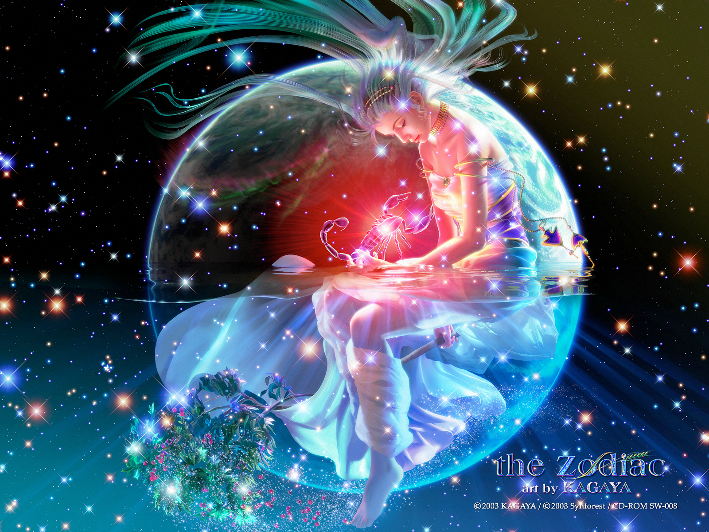
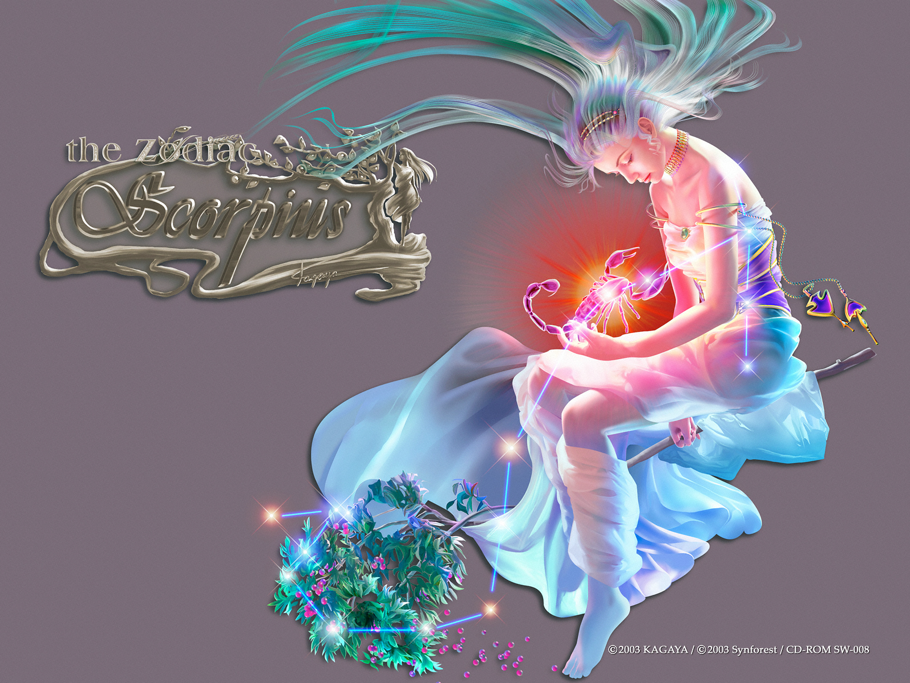
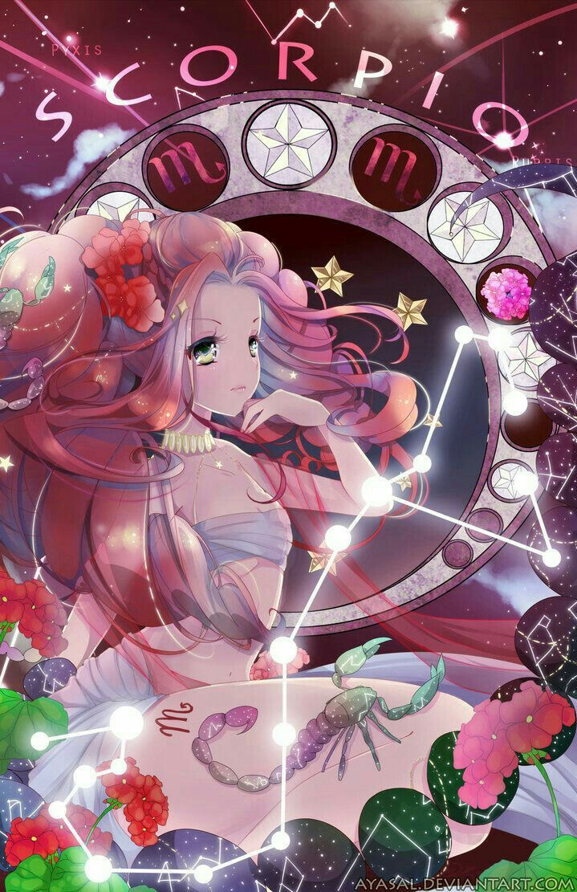

BỌ CẠP
Là biểu tượng của nước. Sao bảo hộ của Cung Thiên Yết là Sao Diêm Vương chi phối sự sống và cái chết, và cũng là Thần tinh của Diêm Phủ. Người thuộc Cung Thiên Yết có một vẻ ngoài rất đỗi bình thường, nhưng năng lực nhìn xuyên thấu tâm can người khác thì đặc biệt nhạy cảm hơn người.
Không thích tranh đấu mà bình tĩnh quan sát thế giới, hơn nữa giỏi chịu đựng chờ đợi thời cơ chín muồi, khi thời cơ đã đến thì một hơi đánh ngã kẻ địch và giành thắng lợi.
2, Mô tảNgười thuộc Cung Thiên Yết là người có mưu lược, có khả năng tập trung vào vấn đề trọng tâm. Cảm xúc vô cùng nhạy cảm, tình cảm tràn trề và có trí tưởng tượng phong phú, quả quyết, thực tế, nhiệt thành, theo chủ ý bản thân mạnh, ý chí kiên định, có nghị lực, nếu một sự việc người thường trốn tránh đối mặt thì Thiên Yết vẫn nhẫn nài bền bỉ cố chấp làm bằng được. Tỉnh táo, thông minh, khả năng lãnh ngộ nhanh, được trực giác trời phú.
Tuy nhiên, cung Thiên Yết có khuynh hướng can thiệp vào việc của người khác, bốc đồng, cấp tiến, ghen tuông, cáu kỉnh, ngang bướng, cứng đầu, khó chế ngự, đa nghi, hay thay đổi, tâm cơ sâu xa, rất nguy hiểm và thường có những cuồng vọng. Hay quá độ với rượu chè, cá tính nham hiểm, thờ ơ, thường dùng những thủ đoạn gian trá tiểu xảo hòng đánh bại đối phương.
Một sinh lực hơn người là thứ vốn rất đáng giá mà người thuộc Cung Thiên Yết thường che đậy kỹ càng, mọi người đều không nghĩ đến điểm này nên hay không đề phòng, nếu điều đó được áp dụng vào con đường chính đạo, nó có thể vững bền dài lâu, không ngừng đuổi theo mục tiêu cho đến khi hoàn tất, nó còn giúp Thiên Yết trổ hết tài năng trong những cạnh tranh khốc liệt. Tính chiếm hữu, lòng đố kỵ và ham muốn trả thù của người cung Thiên Yết rất nặng nề, nó không chỉ dừng lại ở mặt tình cảm, mà trên các phương diện khác cũng khó lòng căm nhịn nhìn người khác vượt mặt, thậm chí có thể giở nhiều thủ đoạn tàn khốc để bản thân hả hê.
3, Tính cách cơ bảnNgười Cung Thiên Yết bình tĩnh, thông minh, trung thành với những ham muốn riêng, chả thèm để ý những suy nghĩ của người khác. Ngang tàng bá đạo, giỏi bảo mật và che đậy sự thật, mưu kế, tính cách u ám, khiến người ta khó nắm bắt. Chăm chú tập trung là đặc điểm cực lớn trong nhân cách Thiên Yết, vì vậy khi đã định vị được mục tiêu, thì tập trung toàn bộ sức lực. Hầu hết những gì miêu tả về Thiên Yết đều nhấn mạnh sự sâu đậm của họ trong tình cảm, trên thực tế người Cung này đều có lòng nhiệt tình tương tự đối với những vấn đề khác trong cuộc sống, họ thích phát huy cuộc sống của mình đến cực hạn, không kể là trong công việc hay trong trò chơi đều có khuynh hướng dốc sức thái quá, chân thành và cuồng nhiệt đối với mục tiêu, và luôn đòi hỏi một cách khắt khe nhất.
Một sinh lực hơn người là thứ vốn rất đáng giá mà người thuộc Cung Thiên Yết thường che đậy kỹ càng, mọi người đều không nghĩ đến điểm này nên hay không đề phòng, nếu điều đó được áp dụng vào con đường chính đạo, nó có thể vững bền dài lâu, không ngừng đuổi theo mục tiêu cho đến khi hoàn tất, nó còn giúp Thiên Yết trổ hết tài năng trong những cạnh tranh khốc liệt. Tính chiếm hữu, lòng đố kỵ và ham muốn trả thù của người cung Thiên Yết rất nặng nề, nó không chỉ dừng lại ở mặt tình cảm, mà trên các phương diện khác cũng khó lòng căm nhịn nhìn người khác vượt mặt, thậm chí có thể giở nhiều thủ đoạn tàn khốc để bản thân hả hê.
Nổi tiếng là biểu tượng mạnh mẽ nhất trong Hoàng Đạo, Hổ Cáp sống cuộc đời sung túc với những mối quan hệ cá nhân sâu sắc và bền chặt. Trẻ con sinh ra dưới cung này thường khôn ngoan trước tuổi. Nhiều nhà chiêm tinh gọi sao này là ‘những linh hồn già dặn nhất’.
Người Hổ Cáp rất kín tiếng. Người khác có thể sống với họ nhiều năm mà không sao hiểu hết con người họ. Họ thường ngụy trang, nói ‘không’ khi ý muốn rằng ‘có’.
Người sinh cung Hổ Cáp có thể rất khác nhau. Nhưng có một đặc điểm khiến họ không thể lẫn với ai khác. Đó là đôi mắt. Không quan trọng sắc màu – xám, xanh, nâu hay đen – đôi mắt của Scorpio có một sức mạnh thôi miên. Trước cái nhìn của họ, người ta thấy lúng túng, muốn nhìn tránh đi. Đôi mắt Hổ Cáp xuyên thấu tâm hồn bạn. Đôi mắt họ ánh lên ngọn lửa cảm xúc mà không từ ngữ nào có thể diễn tả đủ.
Người trong cung Hổ Cáp có ngoại hình đẹp đẽ. Họ có trí tuệ và không thử thách nào đối với họ là quá khó. Họ là những người thú vị, dễ gần và hay giúp đỡ người khác. Nếu bạn không làm điều gì bủn xỉn với người sao Hổ Cáp, họ sẽ là người bạn gắn bó suốt đời với bạn. Họ có xu hướng thích điều khiển và kiểm soát mọi thứ. Họ cực kỳ ghen tuông và lên kế hoạch hàng tuần để trả đũa. Họ thích hợp làm thám tử, bác sỹ, và luật sư vì không gì có thể thoát khỏi sự chú ý của họ.
Sao Hổ cáp vận hành trong 3 tầng lớp tiến hóa linh hồn. Mức phát triển thấp nhất là loài bò cạp thuần túy. Chúng thường buồn rầu và dùng sức mạnh của mình vào việc tàn phá. Những tên tội phạm thuộc Hổ Cáp thường được sinh ra dưới mức độ này.
Thứ 2 là loài chim Đại Bàng. Nó sản sinh ra người Hổ Cáp đầy tham vọng, chiến thắng và giỏi kinh doanh. Họ biết biến đá thành vàng, biến xấu thành tốt. Biểu hiện cao nhất của sao này là chim Phượng Hoàng Tái Sinh. Những người Hổ Cáp ở lớp này là phần lớn là những nhân vật xuất chúng và đầy uy quyền.
Sự ra đời của người sinh cung Bò Cạp hầu như luôn trùng với sự qua đời của một người trong dòng tộc, xảy ra một năm trước hoặc sau ngày sinh. Tương tự, cái chết của Bò Cạp dẫn đến sự ra đời của một thành viên mới trong gia đình một năm trước hoặc sau ngày đó (My Opera). Điều đặc biệt này chắc hẳn có liên quan đến truyền thuyết về Phượng Hoàng Lửa- loài chim sinh tử bằng cách đâm đầu vào lửa, rồi từ ngọn lửa đó sản sinh ra thế hệ mới mạnh mẽ hơn.
Sinh lực của Hổ Cáp to lớn đến nỗi cần có những năng lượng hỗ trợ mới đủ điều kiện cho nó xuất hiện trên đời. Và ngược lại, khi người đó rời sang thế giới bên kia, năng lượng được “giải phóng” ra kỳ vĩ đến nỗi đủ cho sự tạo hoá một sinh linh mới.
Cũng giống như hình ảnh tượng trưng của mình, Hổ Cáp khi theo đuổi mục tiêu của mình không thể hiện ra mình có tính tấn công; mà lặng lẽ quan sát chờ đợi, chỉ cần thời cơ đến, họ sẽ nhảy ra phía trước, và nắm lấy cơ hội. Nếu gặp phải sự khiêu khích hoặc tấn công, họ sẽ lập tức quay đầu lại, nhảy vào chiến đấu, cho dĐương nhiên, chiến lược này hoàn toàn không thể bảo đảm lần nào anh ta cũng có thể chiến thắng, nhưng đối với anh ta mà nói, thất bại là không thể chịu đựng được. Nếu anh ta thất bại nhiều lần, anh ta sẽ không thể chịu đựng được thêm nữa, thế là một số người đi theo con đường của những chú bọ cạp, tự đốt chết mình. Họ tiêu cực, bi quan, lãng phí tài năng của bản thân, chạy trốn hiện thực, xa rời mọi người, chán đời, và cuối cùng là lao vào mượn rượu để giải sầu, huỷ hoại bản thân.ù đối thủ có mạnh đến thế nào, hi vọng chiến thắng có ít ỏi đến thế nào đi chăng nữa.
Hổ Cáp vừa không phải là những người khoa trương, tự cao tự đại, cũng không phải là hữu dũng vô mưu, theo đuổi danh lợi. Để không bị thất bại anh ta sẽ sử dụng các bước đi và biện pháp cần thiết để đạt đến mục đích của mình. Anh ta sẽ đầu tư phần lớn thời gian và tinh lực; cho dù là công việc anh ta phải làm có nhàm chán vô vị đến thế nào đi chăng nưã, có khiến người ta chán nản, có nguy hiểm đến thế nào đi chăng nữa, anh ta đều tìm mọi cách giải quyết khó khăn.
Anh ta không bao giờ nhượng một ai, chỉ cần có tia hi vọng, anh ta sẽ nỗ lực để theo đuổi mục đích của mình. Vì vậy anh ta không muốn tiếp nhận những lời cảnh cáo, không tin sự chỉ đạo của người khác, lại cộng với khuynh hướng không tín nhiệm và luôn hoài nghi người khác; vì vậy, cho dù anh ta có cố gắng hết sức, thì nguy cơ thất bại vẫn có thể phát sinh.
Như vậy, những xung động không thể khống chế trong lòng anh ta sẽ khiến cho anh ta có tâm lý báo thù những người đã từng cản trở hoặc phán đối anh ta, nếu bị coi thường hoặc bị phản bội, anh ta sẽ hầu như không do dự mà tiến hành tấn công, khí thế tiến công lớn để phá hoại tất cả. Những người lừa gạt anh ta, chơi trò hai mặt với anh ta, chắc chắn đã tự tìm cho mình một đối thủ hiếu thắng cực kì. Vì họ không bao giờ quên bạn.
Hổ Cáp thường giỏi quan sát được những động cơ thật sự và thế giới nội tâm của mọi người xung quanh thông qua biểu hiện bên ngoài và nguỵ trang của họ. Hổ Cáp sẽ phải vượt qua hàng tấng trở ngại, không quan tâm đến sự phản đối của người khác, họ sẽ vượt qua mọi trở ngại để đạt đến mục đích cho dù sẽ phải đi đến bờ vực nguy hiểm. Họ không bao giờ quay đầu nhìn lại, cũng không suy nghĩ đến hậu quả sẽ như thế nào.
Đối với chòm sao khác thì Hổ Cáp là điên rồ và mất lý trí. Hổ Cáp cũng không hề cảm thấy ngạc nhiên về luận điểm này. Họ biết mình là người theo chủ nghĩa cực đoan, do đó cũng sẽ kéo theo những phản ứng cực đoan của người khác. Nhưng họ thích như vậy.
4, Phương thức tư duy, kĩ xảo giao lưu và khả năng thích ứng với công việcHổ Cáp luôn lúc nào cũng chuẩn bị chiến đấu tới cùng vì những thứ họ muốn. Không chỉ như vậy, trước khi chiến đấu, họ còn định ra kế hoạch, suy nghĩ vấn đề trước sau, thậm chí còn không nghĩ đến cả chuyện lùi bước. Họ có thể suy nghĩ thầm lặng, mà không bao giờ nói ra với người khác.
Trước khi họ đưa ra quyết định, cho dù người khác có thúc giục họ thế nào đi chăng nữa, có tạo áp lực thế nào với họ cũng không thể có được đáp án từ họ. Phương thức tư duy này khiến họ được mệnh danh là “nhà tư tưởng thần bí”.
Nhưng, do quá trình tư tưởng của họ dựa vào tình cảm mà không phải là tư duy logic; phần lớn là xuất phát từ dự cảm và trực giác mà không phải từ những kiến thức thông thường, vì vậy họ sẽ bị nhầm lẫn trong phán đoán, từ đó làm nảy sinh những hiểu lầm và thất bại khiến họ mất lòng tin. Trong những thất bại này, nếu họ tích cực chủ động nói mục đích của mình cho đồng nghiệp, bạn bè, sau đó tiến hành thảo luận, rất nhiều thất bại có thể tránh khỏi. Nhưng mặc dù là họ có làm như vậy nhưng cũng rất ít khi họ tiếp nhận những ý kiến của người khác.
Do họ luôn có thái độ nghi ngờ với động cơ của người khác, luôn mong muốn tìm ra được những động cơ thực sự được giấu kín của người khác, Hổ Cáp luôn có thể phát biểu ra những câu nói mang tính khiêu khích. Họ làm như vậy hoàn toàn không phải để biểu đạt quan điểm của họ, mà chẳng qua chỉ là mượn đó để quan sát phản ứng của người nghe.
Họ kiểm nghiệm mối quan hệ giữa những người xung quanh trong công việc hoặc trong cuộc sống cá nhân thông qua những cái bẫy ngôn ngữ. Nếu con cá đã bị mắc câu, họ sẽ cho rằng những hoài nghi mà họ vốn bán tin bán nghi là đúng, sau đó lại căn cứ vào tình trạng phản ứng của đối phương để quyết định mức độ mắc lỗi của đối phương.
Cho dù là bà chủ hoặc nhân viên, phương pháp suy nghĩ của Hổ Cáp là những đánh giá tình cảm chứ không phải là tư duy logic dựa vào tâm lý. Vì vậy, trong cái vòng giao tiếp xã hộ của họ chỉ toàn là những người họ có thể bộc lộ tình cảm, họ có thể xử lý những công việc cần phải vắt óc suy nghĩ, hoặc đào sâu nghiên cứu, vì những công việc này thích hợp với họ, thoả mãn yêu cầu của bản thân họ.
Hổ Cáp rất đáng được tín nhiệm, chỉ cần họ muốn, cho dù công việc có nhẹ nhàng thoải mái hay không, có cần nhiều thời gian hay không, họ đều nỗ lực làm việc không mệt mỏi, họ không lãng phí thời gian. Khi họ bắt đầu nỗ lực vì một mục tiêu, họ quyết sẽ không suy tính, do dự hoặc thể hiện sự không nhiệt tình; khi họ quyết tâm khống chế người khác, họ sẽ toàn tâm toàn lực tạo áp lực cho đối phương thông qua một số phương thức tinh vi.
Trong mỗi một lĩnh vực hoặc mỗi một phần của cuộc sống, đối với họ mà nói, hoặc là có tất cả, hoặc là không, không có cách nói “nước đôi”.Cách họ nói chuyện hoặc các phương thức giao lưu khác của họ không phải là thao thao bất tuyệt.
Trong 12 chòm sao họ là chòm sao có thể hiểu rõ được sức mạnh của sự im lặng nhất, vì sự im lặng có thể khiến cho người khác nói ra những điều họ nghĩ, họ cảm giác, mà bản thân Hổ Cáp lại cảm thấy là mình thu được tin tức mà người khác lại không biết là mình nghĩ gì.
Khi gặp phải sự im lặng khó hiểu, rất nhiều người sẽ không ngừng nói ra những điều mà họ không định nói hoặc không muốn nói. Điều này chứng minh cho câu tục ngữ: Nói càng ít, thì nghe càng được nhiều.
Trong toà án, luật sư thường sử dụng kĩ xảo này đạt được những hiệu quả rất hữu dụng- đương nhiên, nếu người làm chứng lại thuộc chòm Hổ Cáp, vậy thì không được rồi, vì họ cũng giỏi sử dụng kĩ xảo này.
Khi tìm công việc, Hổ Cáp nhất định phải nhớ: bạn cũng tìm những công việc có thể tạo cơ hội cho bạn, khiến cho bạn có thể giành được quyền lực và địa vị nhất định; tránh làm những công việc vụn vặt phức tạp, cho dù tiền thù lao có cao cũng không muốn làm; bạn có thẻ làm những công việc cũng cần có trách nhiệm, vì bạn có thể sử dụng cảm nhận trực giác của bạn để phát hiện ra vấn đề trước khi nó xảy ra.
Bạn phải đảm bảo có được những người bạn có thể xây dựng những mối quan hệ thân thiết và hoà hợp trong môi trường làm việc của bạn. Tránh tiếp xúc với những người mà bạn không thích hoặc coi thường, vì như thế sẽ khiến cho tâm trạng của bạn bị suy sụp, hiệu quả công việc giảm.